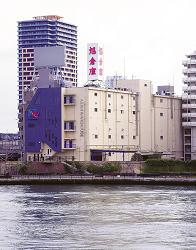
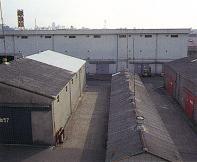
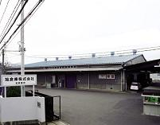
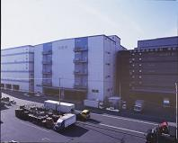
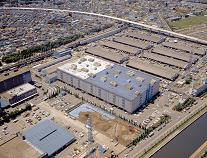
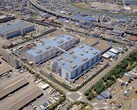
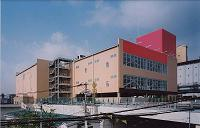

|
|

|
 |
Tsukishima Office and Warehouse
1-14-7 Tsukishima, Chuo-ku, Tokyo ZIP 104-0052
TEL 03-3531-3111 FAX 03-3531-0296
Directions: Walk from exit 7 of Tsukishima Station on Subway Yurakucho
Line and Ohedo Line.
Site area: 3,300 sq. meters (1,000 tsubo)
Real estate leasing area: 11,458 sq. meters (3,472 tsubo) |
Matsudo Office and Warehouse
312 Minami-Hanashimamukai-cho, Matsudo-shi, Chiba-pref. ZIP 271-0065
TEL 0473-63-4241 FAX 0473-63-4243
Directions: Take the Nichidai dental hospital bound bus from Matsudo station
on the JR Joban Line. Get off at Sakae 1-chome bus stop.
Site area: 8,273 sq. meters (2,507 tsubo)
Std items warehouse area: 2,640 sq. meters (800 tsubo)
Hazardous items warehouse area: 1,007 sq.meters (305 tsubo)
Fixed temp. warehouse area: 858 sq. meters (260 tsubo) |
 |
 |
Kashiwa Office and Warehouse
538 Komagi, Nagareyama-shi, Chiba-pref. ZIP 270-0132
TEL 0471-52-5141 FAX 0471-55-4450
Directions: Take the number 2 bus from Kashiwa station's west exit on the JR Joban Line. Get off at the Umebayashi bus stop.
Site area: 12,426 sq. meters (3,759 tsubo)
Std items warehouse area: 6,565 sq.meters (1,986 tsubo)
Hazardous items warehouse area: 926 sq. meters (280 tsubo) |
Kawasaki Office and Warehouse
26-4 Higashi-Ohgishima, Kawasaki-ku, Kawasaki-shi, Kanagawa-pref. ZIP 210-0869
TEL 044-299-0717 FAX 044-299-0743
Directions: From the JR Kawasaki Station, take the Higashi-Ohgishima Junkan bound bus. Get off at Kawasaki "Marien-mae" bus stop. Or, take a taxi from Kojima-shinden station on the Keihin Kyuko Taishi Line. Approx.10minutes by taxi.
Site area: 5,000 sq. meters (1,515 tsubo)
Std items warehouse area: 3,942 sq. meters (1,195 tsubo)
Including bonded goods detention area: 11,489 sq. meters (3,482 tsubo) |
 |
 |
Itabashi Office and Warehouse
6-1-7 Takashimadaira, Itabashi-ku, Tokyo ZIP 175-0082
TEL 03-3975-7460 FAX 03-3975-7466
Directions: Walk from Nishi-Takashimadaira station on the Toei subway Mita Line.
Std items warehouse area: 3,330 sq. meters (1,009 tsubo) |
Adachi Distribution Center
6-2-11, Iriya-cho, Adachi-ku, Tokyo ZIP 121-0836
Directions: Take the Adachi Ryutsu Center bound bus from Nishi-Nippori station on the JR Yamanote Line. Get off at the last stop.
Std items warehouse area: 3,168 sq. meters (960 tsubo) |
 |
 |
ASAHI RAINBOW SQUARE
(Adachi Branch)
1-20-6 Odai,Adachi-ku, Tokyo
Directions:Take the Adachi Ryutsu Center bound bus from Nishi-Nippori station
on the JR Yamanote Line. Get off at Ohgi-Ohashi-minamizume bus stop.
Site area: 8,548 sq. meters(2,590 tsubo) |
|
|
|